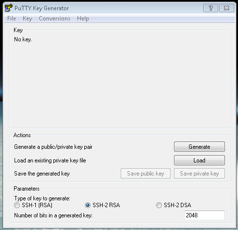
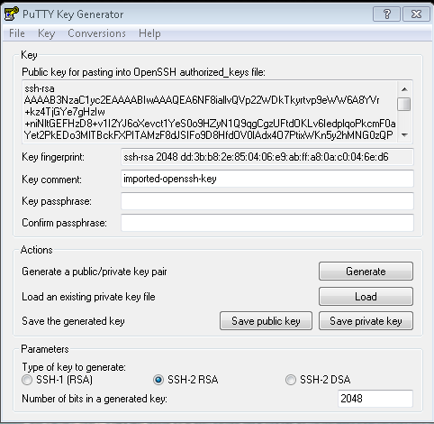

Após a instalação do Vagrant, precisamos acessar a máquina virtual com SSH. Nos ambientes Linux/Mac é facinho, basta rodar ssh usuario@porta, mas no Windows é um pouco diferente…
No Windows precisamos de um programa bem útil chamado Putty.
Obtendo e configurando o Putty
Acesse o site do Putty, baixe o putty.exe e o puttygen.exe.
Execute o Puttygen

Clique em “Load”, selecione o arquivo C:/Users/<usuário>/.vagrant.d/insecure_private_key e clique em “Abrir”

Uma mensagem de confirmação surgirá, pode clicar no OK.
Clique em “save private key” e, na tela que surgir, clique no sim.

No mesmo diretório do arquivo “insecure_private_key”(C:/Users/<usuário>/.vagrant.d/) salve este arquivo com o nome “vagrant.ppk”

Após subir a máquina virtual, então surgirá um endereço de IP do servidor para acesso via ssh, provavelmente esse: 127.0.0.1:2222, então seria essa a configuração no Putty:

Deixe um nome de sua preferência em Saved Sessions, igual onde está escrito lucid32-vagrant na imagem, para poder salvar a sessão e não precisar configurar tudo de novo toda vez que for utilizar.
No canto esquerdo clique na seção “Connection > SSH > Auth”. Clique no botão “Browse” e selecione o arquivo “vagrant.ppk”. Se você seguiu todas as instruções corretamente, ele deve ter sido salvo em C:/Users/<seu usuário>/.vagrant.d/vagrant.ppk.

Volte até a seção “Session”, digite um nome no campo “Saved Sessions” e clique no botão “Save” para salvar essas configurações.
Agora é só clicar em “Open” e vai aparecer uma janela assim:

Pode clicar no “Yes” sem medo.
Pronto!
Agora pode usar seu servidor, instalar e configurar conforme necessário.
Referência: http://simplesideias.com.br/usando-o-vagrant-como-ambiente-de-desenvolvimento-no-windows
Caso não tenha entendido algo, estou a disposição, só me chamar! ;D